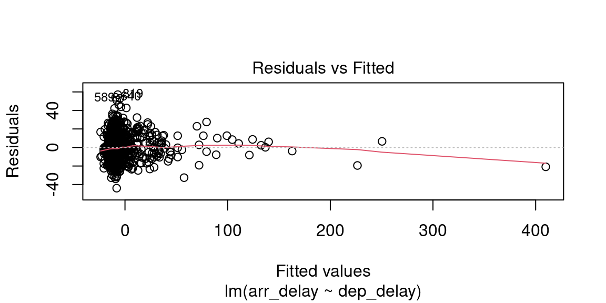

8 Regression analysis
This work is licensed under the GNU General Public License v3.0. Contains public sector information licensed under the Open Government Licence v3.0.
8.1 Simple regression
The simple regression analysis is a supervised machine learning approach to creating a model able to predict the value of one outcome variable \(Y\) based on one predictor variable \(X_1\), by estimating the intercept \(b_0\) and coefficient (slope) \(b_1\), and accounting for a reasonable amount of error \(\epsilon\).
\[Y_i = (b_0 + b_1 * X_{i1}) + \epsilon_i \]
Least squares is the most commonly used approach to generate a regression model. This model fits a line to minimise the squared values of the residuals (errors), which are calculated as the squared difference between observed values the values predicted by the model.
\[redidual = \sum(observed - model)^2\]
A model is considered robust if the residuals do not show particular trends, which would indicate that “something” is interfering with the model. In particular, the assumption of the regression model are:
- linearity: the relationship is actually linear;
- normality of residuals: standard residuals are normally distributed with mean
0; - homoscedasticity of residuals: at each level of the predictor variable(s) the variance of the standard residuals should be the same (homo-scedasticity) rather than different (hetero-scedasticity);
- independence of residuals: adjacent standard residuals are not correlated.
8.1.1 Example
The example that we have seen in the lecture illustrated how simple regression can be used to create a model to predict the arrival delay based on the departure delay of a flight, based on the data available in the nycflights13 dataset for the flight on November 20th, 2013. The scatterplot below seems to indicate that the relationship is indeed linear.
\[arr\_delay_i = (Intercept + Coefficient_{dep\_delay} * dep\_delay_{i1}) + \epsilon_i \]
# Load the library
library(nycflights13)
# November 20th, 2013
flights_nov_20 <- nycflights13::flights %>%
dplyr::filter(!is.na(dep_delay), !is.na(arr_delay), month == 11, day ==20) The code below generates the model using the function lm, and the function summary to obtain the summary of the results of the test. The model and summary are saved in the variables delay_model and delay_model_summary, respectively, for further use below. The variable delay_model_summary can then be called directly to visualise the result of the test.
# Classic R coding version
# delay_model <- lm(arr_delay ~ dep_delay, data = flights_nov_20)
# delay_model_summary <- summary(delay_model)
# Load magrittr library to use %$%
library(magrittr)##
## Attaching package: 'magrittr'## The following object is masked from 'package:purrr':
##
## set_names## The following object is masked from 'package:tidyr':
##
## extractdelay_model <- flights_nov_20 %$%
lm(arr_delay ~ dep_delay)
delay_model_summary <- delay_model %>%
summary()
delay_model_summary##
## Call:
## lm(formula = arr_delay ~ dep_delay)
##
## Residuals:
## Min 1Q Median 3Q Max
## -43.906 -9.022 -1.758 8.678 57.052
##
## Coefficients:
## Estimate Std. Error t value Pr(>|t|)
## (Intercept) -4.96717 0.43748 -11.35 <2e-16 ***
## dep_delay 1.04229 0.01788 58.28 <2e-16 ***
## ---
## Signif. codes: 0 '***' 0.001 '**' 0.01 '*' 0.05 '.' 0.1 ' ' 1
##
## Residual standard error: 13.62 on 972 degrees of freedom
## Multiple R-squared: 0.7775, Adjusted R-squared: 0.7773
## F-statistic: 3397 on 1 and 972 DF, p-value: < 2.2e-16The image below highlights the important values in the output: the adjusted \(R^2\) value; the model significance value p-value and the related F-statistic information F-statistic; the intercept and dep_delay coefficient estimates in the Estimate column and the related significance values of in the column Pr(>|t|).

The output indicates:
- p-value: < 2.2e-16: \(p<.001\) the model is significant;
- derived by comparing the calulated F-statistic value to F distribution 3396.74 having specified degrees of freedom (1, 972);
- Report as: \(F(1, 972) = 3396.74\)
- Adjusted R-squared: 0.7773: the departure delay can account for 77.73% of the arrival delay;
- Coefficients:
- Intercept estimate -4.9672 is significant;
dep_delaycoefficient (slope) estimate 1.0423 is significant.
flights_nov_20 %>%
ggplot2::ggplot(aes(x = dep_delay, y = arr_delay)) +
ggplot2::geom_point() + ggplot2::coord_fixed(ratio = 1) +
ggplot2::geom_abline(intercept = 4.0943, slope = 1.04229, color="red")
8.1.2 Checking assumptions
8.1.2.1 Normality
The Shapiro-Wilk test can be used to check for the normality of standard residuals. The test should be not significant for robust models. In the example below, the standard residuals are not normally distributed. However, the plot further below does show that the distribution of the residuals is not far away from a normal distribution.
##
## Shapiro-Wilk normality test
##
## data: .
## W = 0.98231, p-value = 1.73e-09
8.1.2.2 Homoscedasticity
The Breusch-Pagan test can be used to check for the homoscedasticity of standard residuals. The test should be not significant for robust models. In the example below, the standard residuals are homoscedastic.
##
## studentized Breusch-Pagan test
##
## data: .
## BP = 0.017316, df = 1, p-value = 0.89538.1.2.3 Independence
The Durbin-Watson test can be used to check for the independence of residuals. The test should be statistic should be close to 2 (between 1 and 3) and not significant for robust models. In the example below, the standard residuals might not be completely independent. Note, however, that the result depends on the order of the data.
##
## Durbin-Watson test
##
## data: .
## DW = 1.8731, p-value = 0.02358
## alternative hypothesis: true autocorrelation is greater than 08.1.2.4 Plots
The plot.lm function can be used to further explore the residuals visuallly. Usage is illustrated below. The Residuals vs Fitted and Scale-Location plot provide an insight into the homoscedasticity of the residuals, the Normal Q-Q plot provides an illustration of the normality of the residuals, and the Residuals vs Leverage can be useful to identify exceptional cases (e.g., Cook’s distance greater than 1).



8.1.3 How to report
Overall, we can say that the delay model computed above is fit (\(F(1, 972) = 3396.74\), \(p < .001\)), indicating that the departure delay might account for 77.73% of the arrival delay. However the model is only partially robust. The residuals satisfy the homoscedasticity assumption (Breusch-Pagan test, \(BP = 0.02\), \(p =0.9\)), and the independence assumption (Durbin-Watson test, \(DW = 1.87\), \(p =0.02\)), but they are not normally distributed (Shapiro-Wilk test, \(W = 0.98\), \(p < .001\)).
The stargazer function of the stargazer library can be applied to the model delay_model to generate a nicer output in RMarkdown PDF documents by including results = "asis" in the R snippet option.
8.2 Multiple regression
The multiple regression analysis is a supervised machine learning approach to creating a model able to predict the value of one outcome variable \(Y\) based on two or more predictor variables \(X_1 \dots X_M\), by estimating the intercept \(b_0\) and the coefficients (slopes) \(b_1 \dots b_M\), and accounting for a reasonable amount of error \(\epsilon\).
\[Y_i = (b_0 + b_1 * X_{i1} + b_2 * X_{i2} + \dots + b_M * X_{iM}) + \epsilon_i \]
The assumptions are the same as the simple regression, plus the assumption of no multicollinearity: if two or more predictor variables are used in the model, each pair of variables not correlated. This assumption can be tested by checking the variance inflation factor (VIF). If the largest VIF value is greater than 10 or the average VIF is substantially greater than 1, there might be an issue of multicollinearity.
8.2.1 Example
The example below explores whether a regression model can be created to estimate the number of people in Leicester commuting to work using private transport (u121) in Leicester, using the number of people in different industry sectors as predictors.
For instance, occupations such as electricity, gas, steam and air conditioning supply (u144) require to travel some distances with equipment, thus the related variable u144 is included in the model, whereas people working in information and communication might be more likely to work from home or commute by public transport.
A multiple regression model can be specified in a similar way as a simple regression model, using the same lm function, but adding the additional predictor variables using a + operator.
# Select and
# normalise variables
leicester_2011OAC_transp <-
leicester_2011OAC %>%
dplyr::select(
OA11CD,
Total_Pop_No_NI_Students_16_to_74, Total_Employment_16_to_74,
u121, u141:u158
) %>%
# percentage method of travel
dplyr::mutate(
u121 = (u121 / Total_Pop_No_NI_Students_16_to_74) * 100
) %>%
# percentage across industry sector columns
dplyr::mutate(
dplyr::across(
u141:u158,
function(x){ (x / Total_Employment_16_to_74) * 100 }
)
) %>%
# rename columns
dplyr::rename_with(
function(x){ paste0("perc_", x) },
c(u121, u141:u158)
)
# Selected variables
# perc_u120: Method of Travel to Work, Private Transport
# perc_u142: Industry Sector, Mining and quarrying
# perc_u144: Industry Sector, Electricity, gas, steam and air conditioning ...
# perc_u146: Industry Sector, Construction
# perc_u149: Industry Sector, Accommodation and food service activities
# Create model
commuting_model1 <-
leicester_2011OAC_transp %$%
lm(
perc_u121 ~
perc_u142 + perc_u144 + perc_u146 + perc_u149
)
# Print summary
commuting_model1 %>%
summary()##
## Call:
## lm(formula = perc_u121 ~ perc_u142 + perc_u144 + perc_u146 +
## perc_u149)
##
## Residuals:
## Min 1Q Median 3Q Max
## -35.315 -6.598 -0.244 6.439 31.472
##
## Coefficients:
## Estimate Std. Error t value Pr(>|t|)
## (Intercept) 37.12690 0.94148 39.434 < 2e-16 ***
## perc_u142 3.74768 1.21255 3.091 0.00205 **
## perc_u144 1.16865 0.25328 4.614 4.48e-06 ***
## perc_u146 1.05408 0.09335 11.291 < 2e-16 ***
## perc_u149 -1.56948 0.08435 -18.606 < 2e-16 ***
## ---
## Signif. codes: 0 '***' 0.001 '**' 0.01 '*' 0.05 '.' 0.1 ' ' 1
##
## Residual standard error: 9.481 on 964 degrees of freedom
## Multiple R-squared: 0.3846, Adjusted R-squared: 0.3821
## F-statistic: 150.6 on 4 and 964 DF, p-value: < 2.2e-16##
## Shapiro-Wilk normality test
##
## data: .
## W = 0.99889, p-value = 0.8307##
## studentized Breusch-Pagan test
##
## data: .
## BP = 28.403, df = 4, p-value = 1.033e-05##
## Durbin-Watson test
##
## data: .
## DW = 1.835, p-value = 0.004908
## alternative hypothesis: true autocorrelation is greater than 0## perc_u142 perc_u144 perc_u146 perc_u149
## 1.006906 1.016578 1.037422 1.035663The output above suggests that the model is fit (\(F(4, 964) = 150.62\), \(p < .001\)), indicating that a model based on the presence of people working in the four selected industry sectors can account for 38.21% of the number of people using private transportation to commute to work. However the model is only partially robust. The residuals are normally distributed (Shapiro-Wilk test, \(W = 1\), \(p =0.83\)) and there seems to be no multicollinearity with average VIF \(1.02\), but the residuals don’t satisfy the homoscedasticity assumption (Breusch-Pagan test, \(BP = 28.4\), \(p < .001\)), nor the independence assumption (Durbin-Watson test, \(DW = 1.84\), \(p < .01\)).
The coefficient values calculated by the lm functions are important to create the model, and provide useful information. For instance, the coefficient for the variable perc_u144 is 1.169, which indicates that if the presence of people working in electricity, gas, steam and air conditioning supply increases by one percentage point, the number of people using private transportation to commute to work increases by 1.169 percentage points, according to the model. The coefficients also indicate that the presence of people working in accommodation and food service activities actually has a negative impact (in the context of the variables selected for the model) on the number of people using private transportation to commute to work.
In this example, all variables use the same unit and are of a similar type, which makes interpreting the model relatively simple. When that is not the case, it can be useful to look at the standardized \(\beta\), which provide the same information but measured in terms of standard deviation, which make comparisons between variables of different types easier to draw. For instance, the values calculated below using the function lm.beta of the library lm.beta indicate that if the presence of people working in construction has the highest impact on the outcome varaible. If the presence of people working in construction increases by one standard deviation, the number of people using private transportation to commute to work increases by 0.29 standard deviations, according to the model.
# Install lm.beta library if necessary
# install.packages("lm.beta")
library(lm.beta)
lm.beta(commuting_model1)##
## Call:
## lm(formula = perc_u121 ~ perc_u142 + perc_u144 + perc_u146 +
## perc_u149)
##
## Standardized Coefficients::
## (Intercept) perc_u142 perc_u144 perc_u146 perc_u149
## 0.00000000 0.07836017 0.11754058 0.29057993 -0.478410838.3 Exercise 324.1
Question 324.1.1: Create a model having as outcome variable the presence of people using private transport for commuting to work, and using a stepwise “both” approach, having all the variables created for the example above and related to the presence of people working in different industry sectors (perc_u141 to perc_u158) as scope.
Question 324.1.2: Is the presence of people using public transportation to commute to work statistically, linearly related to mean age (u020)?
Question 324.1.3: Is the presence of people using public transportation to commute to work statistically, linearly related to (a subset of) the age structure categories (u007 to u019)?